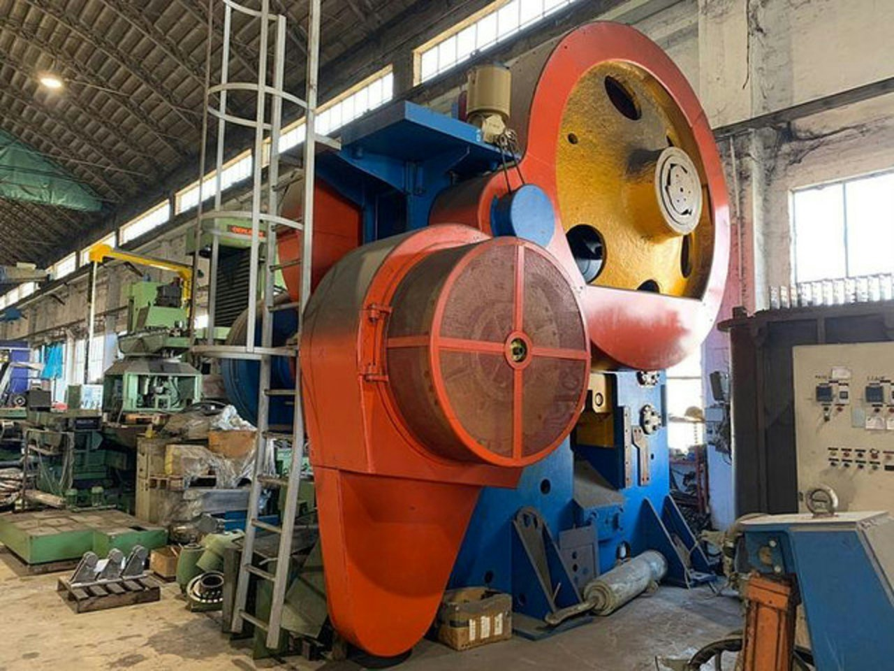
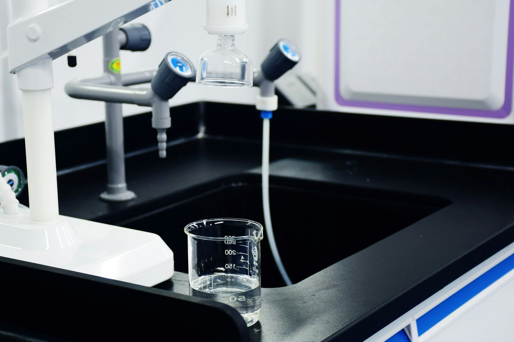
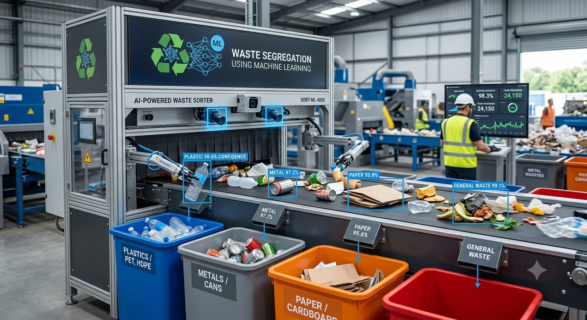
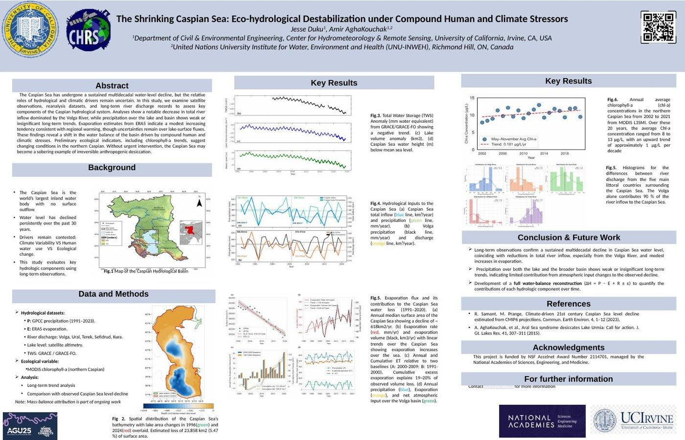

Plastic Waste Detection
A YOLOv8 computer vision model for detecting plastic in rivers, built during a REVA University data competition.
I am a PhD student in civil engineering at UC Irvine, where I study floods, droughts, and how machine learning can help us manage water better.
Most of my work looks at how floods and droughts are changing as the climate shifts, and what that means for the communities in their path. I am interested in compound hazards, cases where two risks hit at once and do more damage together than either would alone, and in extreme events more generally.
To get at this, I combine statistical hydrology with machine learning to forecast how much water we will have, put real numbers on the risks, and help design infrastructure that can keep up with a changing climate. The question of how AI can reshape water management is what drives my work.
Using climate data, AI, and network science to model how compound climate shocks propagate through the international food system and to predict acute food insecurity (IPC Phase 3+).
A YOLOv8 computer vision model for detecting plastic in rivers, built during a REVA University data competition.

SVM regression model for punching shear failure in flat concrete slabs — my undergraduate thesis at KNUST.

Predictive modeling for water potability across exploration, preprocessing, and classification stages.

Real-time YOLOv8 classifier across plastic, glass, paper, and trash for automated waste sorting.
